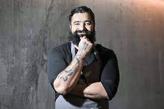

Chef Roberto Solis
Uno de los grandes pioneros en la vanguardia de la cocina mexicana es el chef Roberto Solís, originario de Mérida, Yucatán, donde actualmente dirige la cocina del afamado restaurante Néctar. Comenzó su trayectoria profesional trabajando en cocinas de hoteles del estado. Años después, con tan solo 27 años y una visión clara de lo que estaba buscando, decidió abrir Néctar, en noviembre de 2003. La cocina de Roberto proviene principalmente de sus experiencias personales viajando por el mundo.
En el verano de 2008 la sed de conocimiento lo llevó a realizar una estancia en el restaurante Per Se del chef Thomas Keller, en Nueva York, Estados Unidos. Fue allí que tuvo el privilegio de experimentar otro gran concepto “La nueva cocina americana-francesa”. Luego viajó a Tokio, donde estuvo en Les Créations de Narisawa, trabajando codo a codo con el chef japonés Narisawa, de quien aprendió sobre el gran “minimalismo culinario japonés”. La filosofía de Roberto se lleva a cabo en armonía con la naturaleza, creando lo que hoy se conoce como “La nueva cocina yucateca”. Los fundamentos de ésta son los ingredientes de la región, transformando la cocina yucateca con una visión fresca, incorporando flores, hierbas y animales locales, como venado (ciervo local de criadero certificado), pecarí y cerdo pelón (cochinillo). Después de muchos años de tratar de experimentar e innovar con los productos locales y la posible utilización de los mismos en diferentes recetas, un tanto alejadas de la rigurosa tradición, Roberto finalmente logró la creación de una nueva cocina, aplicando técnicas de vanguardia con ingredientes frescos locales.

Chef Ricardo Muñoz Zurita
 Originario de Coatzacoalcos, Veracruz, comenzó su carrera trabajando en un restaurante familiar. Inicialmente estudió la carrera de Administración de Empresas Turísticas en la Escuela Internacional de Turismo de la Ciudad de México. Continuó su formación como chef en el San Diego Community College, más adelante en Le Cordon Bleu de París y en The Culinary Institute of America de Nueva York.
Originario de Coatzacoalcos, Veracruz, comenzó su carrera trabajando en un restaurante familiar. Inicialmente estudió la carrera de Administración de Empresas Turísticas en la Escuela Internacional de Turismo de la Ciudad de México. Continuó su formación como chef en el San Diego Community College, más adelante en Le Cordon Bleu de París y en The Culinary Institute of America de Nueva York.
En enero de 2009 representó con éxito a México en Madrid Fusión 2009, el máximo evento gastronómico a nivel mundial. Fue nombrado por la revista Time “Prophet and preserver of culinary tradition”, y considerado como uno de los Tops Chefs de México y Latinoamérica. Ha recibido diversos reconocimientos y galardones, además de formar parte de la Academia Culinaria de Francia. Actualmente dirige, como chef propietario, los cafés Azul y Oro, en la Universidad Nacional Autónoma de México y los restaurantes Azul Condesa y Azul Histórico.
Chef Benito Molina
Dueño y jefe de cocina de tres restaurantes en Ensenada, Baja California: Manzanilla, Silvestre y Muelle tres, cuya cocina se destaca por utilizar producto marítimo local fresco y por su carácter sustentable. Su experiencia en el mundo de la gastronomía inició cuando tenía quince años trabajando como garrotero en el Maxim’s de París, de la Ciudad de México. Posteriormente, realizó estudios profesionales en el New England Culinary Institute en Vermont, Estados Unidos.
Ha participado en festivales como Entre amigos, Pacificooks, Fiestas de la Vendimia y New World Wine and Food Festival. En 2006, la revista Saveur eligió sus ostiones ahumados dentro de su lista de los 100 mejores, y el Monterrey Bay Aquarium, de California, le otorgó un reconocimiento por su inclinación a utilizar productos sustentables del mar.
En 2009, la revista Monocle lo consideró uno de los mejores chefs/restauranteros mexicanos y Travel & Leisure ubicó a Manzanilla entre los restaurantes más reconocidos de México. En 2014, Manzanilla ocupó el puesto 25 dentro de los 50 Mejores Restaurantes de Latinoamérica.

Chef Gabriela Ruiz
 Gabriela Ruiz Lugo es originaria de Comalcalco, Tabasco, cuna del cacao en México. Estudió gastronomía en la Escuela Culinaria del Sureste (ECS), en Mérida, Yucatán. Los primeros esbozos de Gabriela como cocinera y como investigadora gastronómica, los realizó en 2007. En este año, participó en el concurso nacional “Al Rescate de la Cocina Tradicional Mexicana”, organizado por la sección Buena Mesa del periódico Reforma. Ahí tuvo que investigar una receta tradicional de su estado; seleccionó el “Pejelagarto en verde”, especie endémica de la zona, por lo que resultó la ganadora del primer lugar. Inició su carrera profesional trabajando en algunos de los mejores restaurantes de México, como el restaurante Pujol, del chef Enrique Olvera.
Gabriela Ruiz Lugo es originaria de Comalcalco, Tabasco, cuna del cacao en México. Estudió gastronomía en la Escuela Culinaria del Sureste (ECS), en Mérida, Yucatán. Los primeros esbozos de Gabriela como cocinera y como investigadora gastronómica, los realizó en 2007. En este año, participó en el concurso nacional “Al Rescate de la Cocina Tradicional Mexicana”, organizado por la sección Buena Mesa del periódico Reforma. Ahí tuvo que investigar una receta tradicional de su estado; seleccionó el “Pejelagarto en verde”, especie endémica de la zona, por lo que resultó la ganadora del primer lugar. Inició su carrera profesional trabajando en algunos de los mejores restaurantes de México, como el restaurante Pujol, del chef Enrique Olvera.
Actualmente es chef propietaria de la empresa Gourmet MX, que en sus inicios incursionó únicamente en el área de banquetes empresariales. En 2012 decidió apostar por la ampliación del espacio y fue así como abrió el restaurante Gourmet MX, en lo que hasta entonces era un área de bodegas. Fue tan apreciado que es considerado uno de los 120 mejores restaurantes de México según la Guía México Gastronómico de Culinaria Mexicana, S. Pellegrino®, Nespresso®. Hoy, cinco años después, debido a ella y a su socio Rafael, ese espacio se ha convertido en la mejor zona de restaurantes de todo el estado de Tabasco. Por otra parte ha participado en festivales de cocina mexicana en Alemania e India; también ha cosechado grandes logros, como el reconocimiento “Jóvenes Maestros” otorgado por el salón del gusto Millesime México. A principios de 2016 inauguró su tercer proyecto, Chata Pandal, un gastro-bar al lado de su restaurante Gourmet MX. El mismo año fue invitada por parte de las universidades de Stanford y Berkeley al Food Innovation & Design Symposium para impartir una ponencia sobre el cacao y su cultivo tradicional.
Chef Francisco Ruano
De temperamento rebelde y obsesionado por la perfección, Francisco Ruano, originario de la ciudad de Guadalajara, se declara a sí mismo como “un inconformista permanente”. Está al frente del restaurante Alcalde, considerado como uno de los mejores restaurantes del estado de Jalisco y de todo México. Tanto, que fue recientemente nombrado como el restaurante a seguir dentro de la lista The Latin America’s 50 Best Restaurants de S. Pellegrino®. Enamorado de los sabores que aprendió de la cocina tradicional de su estado, realizó sus estudios en su ciudad natal. Después decidió hacer una estancia profesional de cocina en Puerto Vallarta, donde estuvo bajo las órdenes del chef Thierry Blouet, propietario del reconocido Café des Artistes. Después de un año en sus cocinas, se embarcó como cocinero en un crucero que hacía viajes a Alaska y el Caribe; a bordo aprendió la disciplina que requiere el dominio de los fogones. Una vez en tierra decidió matricularse en la escuela de cocina Luis Irizar, una de las más prestigiosas de España. Al graduarse realizó estancias profesionales en tres de los mejores restaurantes de Europa y del mundo: Mugaritz, del chef Andoni Luis Aduriz (País Vasco); el Celler de Can Roca, de los hermanos Roca (Girona), y Noma, del chef René Redzepi (Dinamarca). En sus propias palabras asegura que su experiencia en las cocinas europeas influyó de forma determinante en su filosofía de cocina y los métodos que utiliza. “Aprendí la importancia de la cercanía de la cocina con la tierra y sus productos, y así fue como decidí que una constante en mi cocina sería la sencillez en las presentaciones”. Éstas son sin duda dos de las cualidades imprescindibles en la cocina del aclamado restaurante Alcalde. Francisco Ruano se ha identificado como el chef de la gran estética de la cocina moderna mexicana. Además de ofrecer al comensal sabores sorprendentes, cada uno de sus platos es un verdadero lienzo que traspasa la frontera de la creación plástica.
